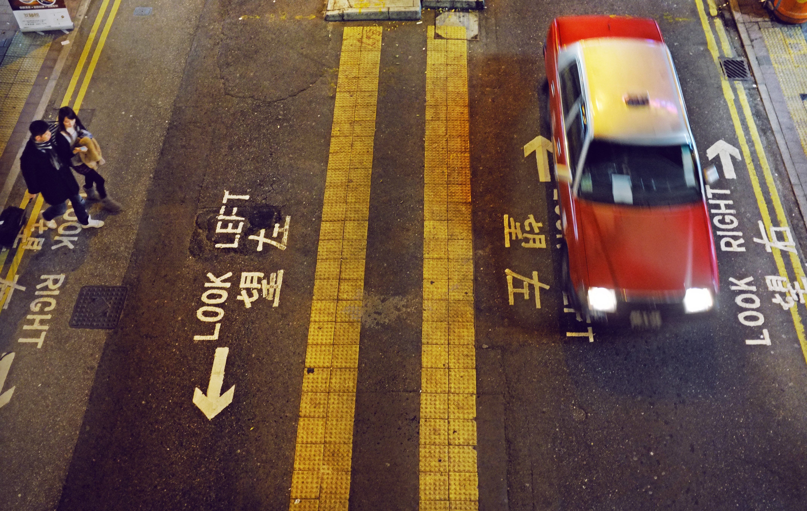

학생 시절에는 니코니코 동화에서 우타이테로 활동한 경력이 있으며, 2019년 여름경 유튜브에 자작곡을 업로드하기 시작하며 본격적인 활동을 시작했다. 중학교 시절에는 노래하는 성우를 지망했으나, 인터넷으로 노래를 발표할 수 있다는 사실을 알게 되어 중학교 2학년경부터 고등학교 2학년경까지 우타이테로 활동, 그 후 직접 곡을 만들게 되며 다른 사람의 노래를 부르는 것보다 자신의 노래를 부르는 게 좋을 것 같다는 생각을 하게 되었다고. 
싱어송라이터 활동 개시 이후 SNS나 시부야 노상 라이브 등을 통해 이름을 알렸고, 같은 해 가을 첫 디지털 싱글로 발매한 도쿄 플래시가 SNS를 중심으로 인기를 끌며 단기간에 화제가 되었다. 2020년 초에는 후지이 카제나 카미야마 요우, Novelbright 등과 함께 일본 Spotify에서 선정한 주목할 만한 신인 중 하나로 꼽혔다.